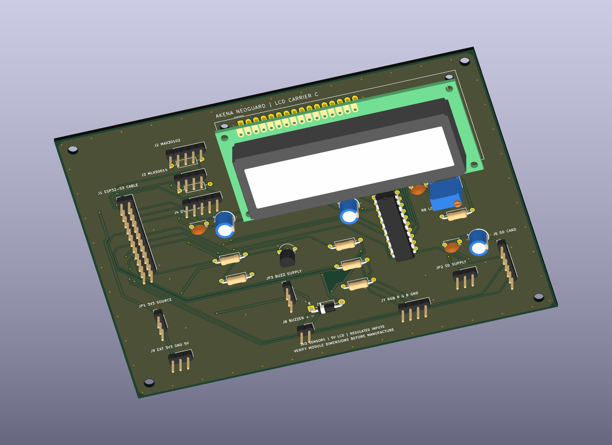
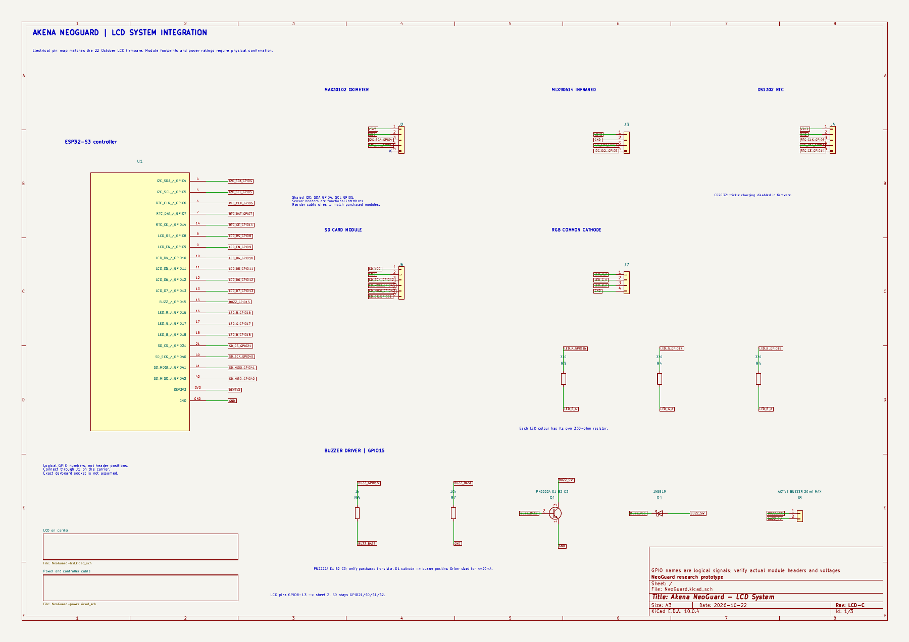
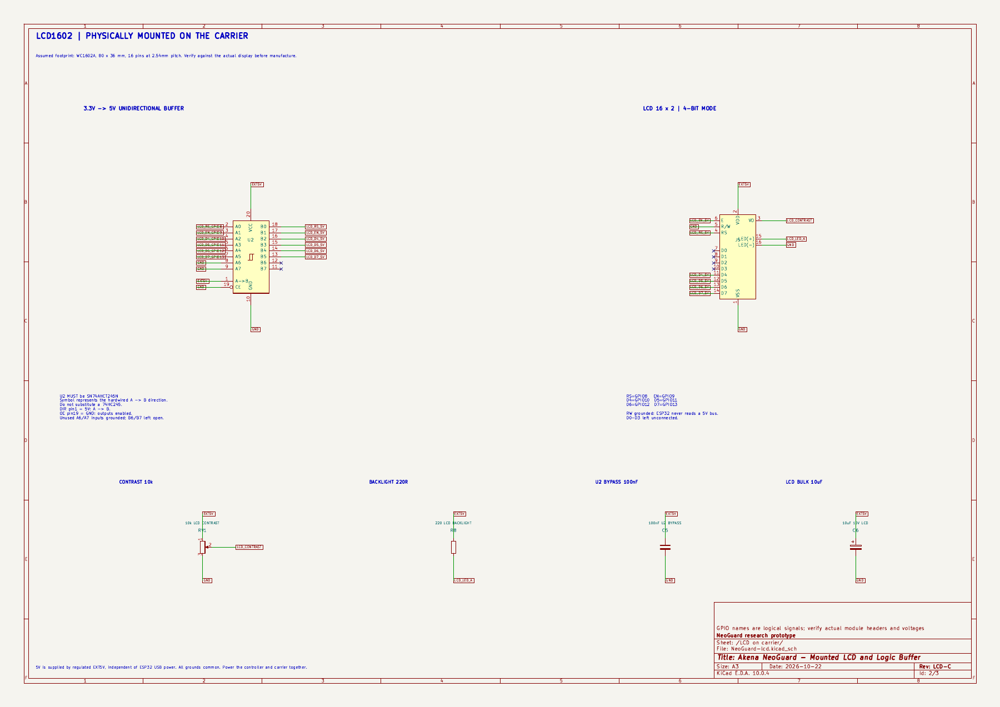
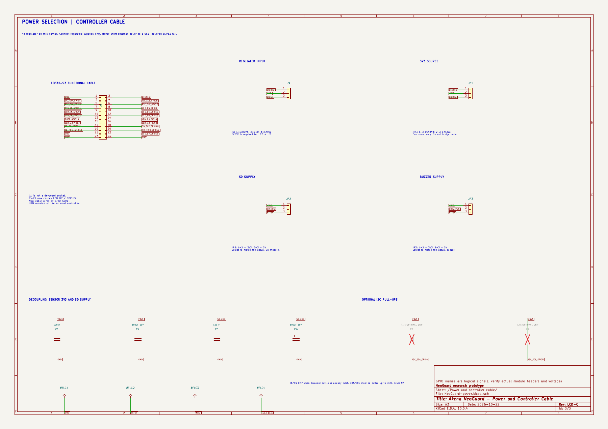

Akena • NeoGuard • Revision LCD-C • 22 October 2026
Your LCD carrier PCB.
The 16×2 LCD is mounted directly on this two-layer carrier board. The design keeps the agreed ESP32-S3 GPIO assignments for the LCD, oximeter, infrared temperature sensor, RTC, SD card, RGB LED and buzzer control.
Checks passed: electrical rules · PCB rules · schematic parity · 134 component pins · 19 firmware GPIO assignments
Physical fit still needs confirmation. This layout assumes an 80 × 36 mm WC1602A-style LCD. The ESP32 connects through a labelled cable header. Exact development-board sockets and breakout mounting patterns have not been inferred from unconfirmed model numbers.

Actual KiCad render, with LCD footprint and 3D model fitted. The display appears blank because the model shows an unpowered screen.
The mounted LCD
16-pin connection, four nonplated mounting holes, 10k contrast adjustment, backlight resistor and AHCT245 buffer for the 5V display.
RS 8 · EN 9 · D4 10 · D5 11 · D6 12 · D7 13
Actual PCB routing
Top and bottom copper, silkscreen and the 140 × 105 mm board outline. Open full-size layout.
Three-sheet schematic
System connections, the LCD/buffer circuit, and regulated power/controller cable. Open the complete PDF for zooming and printing.

1 — ESP32-S3 and peripheral signal assignments

2 — Mounted LCD, voltage buffer, contrast and backlight

3 — Power selection, controller cable and decoupling